基本统计¶
统计学是一门很古老的科学，一般认为其学理研究始于古希腊的亚里斯多德时代，迄今已有两千三百多年的历史。这里的基本统计主要包含计算基本统计量(全表基本统计量和单列基本统计量)、直方图、协方差、相关矩阵、top100、bottom10、频率、百分位、全表统计汇总、散布图矩阵；连续变量分组统计、连续变量数据分组、按partition分类统计、分类变量统计、扩展直方图、交叉表、对比交叉表和排行榜。
基本统计量共22种，包括：总个数，有效值个数，缺失值个数，和，平方和，立方和，最小值，最大值，极差，均值，方差，标准差，变异系数，标准误差，偏度，峰度，二阶矩，三阶矩，四阶矩，二阶中心距，三阶中心距，四阶中心距。这些统计量的英文名对应表如下所示：
- countTotal: 总个数
- count：有效值个数
- countMissValue：缺失值个数
- sum：和
- sum2：平方和
- sum3：立方和
- min：最小值
- max：最大值
- range：极差
- mean：均值
- variance：方差
- standardDeviation：标准差
- cv：变异系数
- standardError: 标准误差
- skewness: 偏度
- kurtosis：峰度
- moment2: 二阶矩
- moment3: 三阶矩
- moment4: 四阶矩
- centralMoment2：二阶中心距
- centralMoment3：三阶中心距
- centralMoment4：四阶中心距
全表基本统计¶
全表基本统计量是指对全表数据进行基本统计。执行此统计的方式有两种：界面和函数，详细介绍见下文。
函数¶
def simpleSummary(inputTableName):
- 参数:
- inputTableName: 输入表名.
- 返回:
- SummaryResultTable.
返回值SummaryResultTable srt，通过列名可以取出每一列的基本统计量等，基本统计量如下：
src = srt.col("colName")
src.countTotal: 总个数
src.count：有效值个数
src.countMissValue：缺失值个数
src.sum：和
src.sum2：平方和
src.sum3：立方和
src.min：最小值
src.max：最大值
src.range：极差
src.mean：均值
src.variance：方差
src.standardDeviation：标准差
src.cv：变异系数
src.standardError: 标准误差
src.skewness: 偏度
src.kurtosis：峰度
src.moment2: 二阶矩
src.moment3: 三阶矩
src.moment4: 四阶矩
src.centralMoment2：二阶中心距
src.centralMoment3：三阶中心距
src.centralMoment4：四阶中心距
示例：
simpleSrt = Statistics.simpleSummary(‘kddcup’)
print simpleSrt
注意事项：
- 如果列类型是string, 那么除了count, countTotal, countMissValue, countNanValue, countPositiveInfinity, countNegativInfinity, 其余都是NAN.
- 如果列类型是datetime, 那么除了count, countTotal, countMissValue, countNanValue, countPositiveInfinity, countNegativInfinity, min, max其他都是NAN.
单列基本统计量¶
单列基本统计量是指对单列数据进行基本统计。执行此统计的方式有两种：界面和函数，详细介绍见下文。
函数¶
def simpleSummary(inputTableName,summaryColNames=None):
- 参数:
- inputTableName: 输入表名.
- summaryColNames: (可选)需要计算的列名列表
- 返回:
- SummaryResultTable.
返回值说明见全表统计量函数。
示例: 单列基本统计
simpleSrt = Statistics.simpleSummary('kddcup', summaryColNames=['flagg'])
print simpleSrt
print simpleSrt.col('flagg').count
示例: 多列基本统计
simpleSrt = Statistics.simpleSummary('kddcup', summaryColNames=['flagg', 'countg'])
print simpleSrt
print simpleSrt.col('flagg').min
直方图¶
直方图(Histogram)又称质量分布图，柱状图，是一种统计报告图，由一系列高度不等的纵向条纹或线段表示数据分布的情况。一般用横轴表示数据类型，纵轴表示分布情况。该操作是指对单列数据显示直方图，执行方式包括两种：界面和函数。
界面¶
该操作对于单列数据显示直方图，点击菜单，全表统计→直方图，显示参数窗体如下：
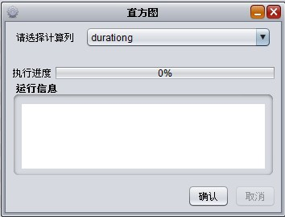或者在表格上选取一列，右键弹出菜单选择直方图，参考单列基本统计量功能。
点击菜单后点击确定进行计算运行结果如下：
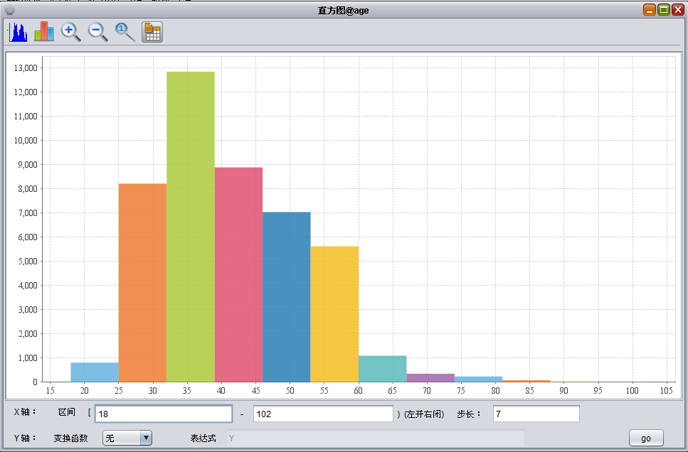直方图界面分为三个部分：
上方的工具栏：
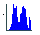以推荐的最小步长显示直方图
以推荐的最大步长显示直方图
将当前步长减小显示直方图
将当前步长增大显示直方图
恢复原区间和步长
上述操作均针对下方的当前区间栏进行缩放操作。
查看当前直方图的数据
下方区域 显示直方图的信息。区间显示该数据的最大最小的区间，用户自定义的显示区间必须在此范围之内。在下方区间栏和步长栏输入对应的区间值和步长后，点击”GO”按钮显示新的直方图。(当用户输入步长值不合理时候，会自动调整后再显示)。
Y轴可以选择变换函数，默认是原值，可以选择按对数显示，或者自定义表达式显示。其中对数的公式是:
case when y>=0 then log(2, y+1)
else –log(2, -y+1)
end.
注意事项：表达式的变量必须是Y。
例如选择推荐最小步长，结果如下图：
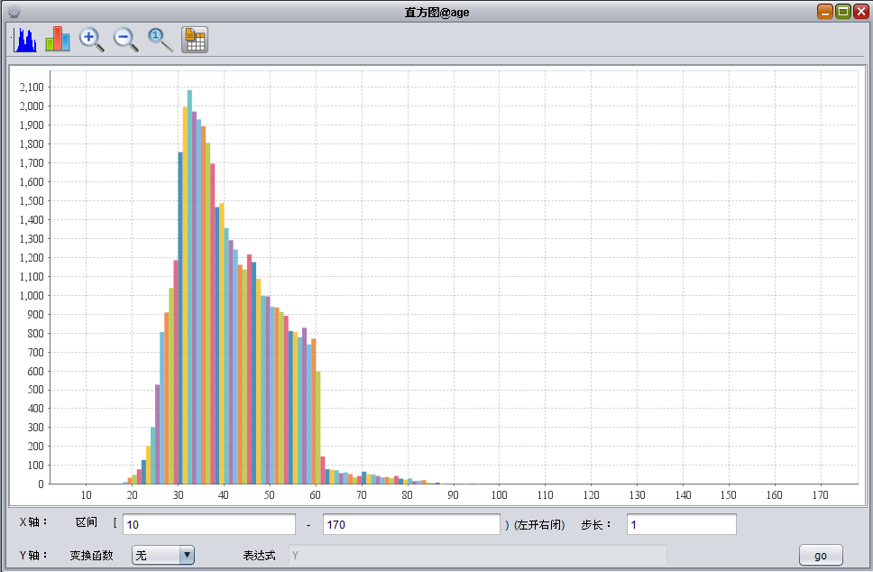选择查看数据，显示每个区间的频数，结果如下图：
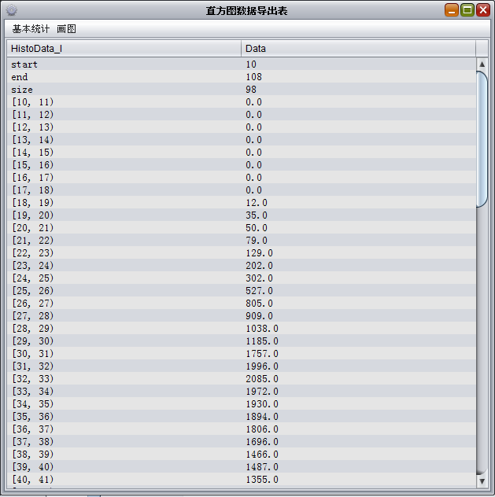选择x轴区间[30, 50), 步长是1，变换函数无，点击”GO”，显示如下图：
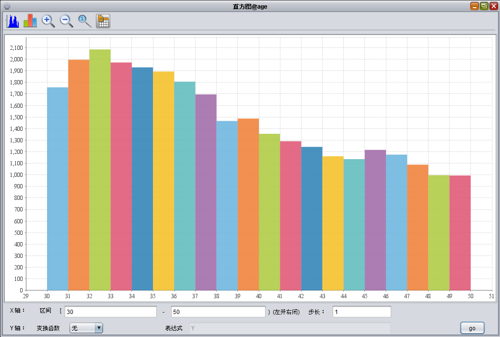选择变换函数为对数，图像变为：
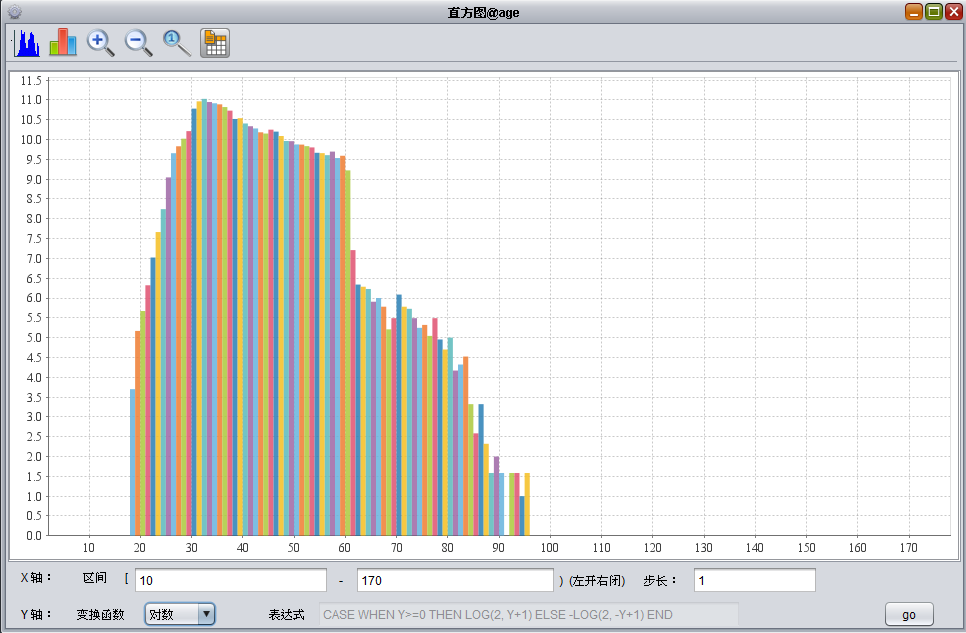函数¶
示例:
srt = Statistics.summary('kddcup', summaryColNames=['countg'])
show(srt.col('countg').getHistogram())
协方差¶
该操作对于全表数据计算协方差，协方差(Covariance)在概率论和统计学中用于衡量两个变量的总体误差。执行此统计的方式有两种：界面和函数，详细介绍见下文。
界面¶
该操作对于全表数据计算协方差。点击菜单→全表统计→协方差，显示参数窗体如下：
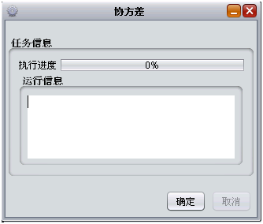或者在表格上选取一列，右键弹出菜单选择协方差，参考单列基本统计量功能。 点击菜单后点击确定进行计算，运行结果如下：
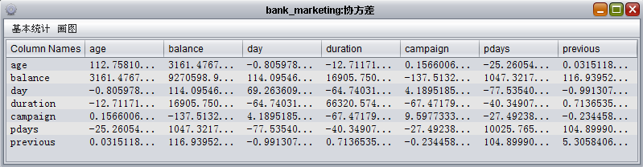函数¶
示例: 整表协方差
srt = Statistics.summary('kddcup')
#返回cov二维数组
cov = srt.getCov()
print cov[4][4]
示例: 选列协方差
srt = Statistics.summary('kddcup', summaryColNames=['flagg', 'countg'])
#返回2*2的二维数组
cov = srt.getCov()
print cov[1][1]
相关矩阵¶
该操作对于全表数据计算相关矩阵，相关矩阵也叫相关系数矩阵，是由矩阵各列间的相关系数构成的。也就是说，相关矩阵第i行第j列的元素是原矩阵第i行和第j列的相关系数。执行此统计的方式有两种：界面和函数，详细介绍见下文。
界面¶
该操作对于全表数据计算相关矩阵，点击菜单→全表统计→协相关矩阵，显示参数窗体如下:
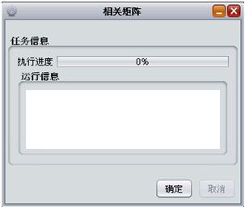或者在表格上选取一列，右键弹出菜单选择相关矩阵，参考单列基本统计量功能。点击菜单后点击确定进行计算，运行结果如下：
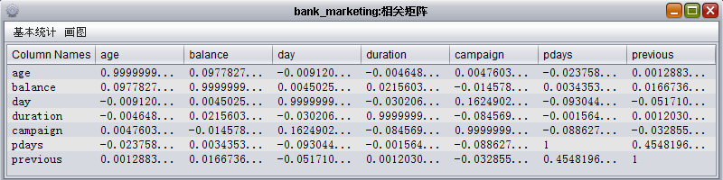函数¶
示例: 整表相关矩阵
srt = Statistics.summary('kddcup')
#返回corr二维数组
corr = srt.getCorr()
print corr[1][1]
示例: 选列相关矩阵
srt = Statistics.summary('kddcup', summaryColNames=['flagg', 'countg'])
#返回corr 2*2二维数组
corr = srt.getCorr()
print corr[1][1]
Top100¶
Top100此操作对于单列数据计算最大的前100值，执行此统计的方式有两种：界面和函数，详细介绍见下文。
界面¶
点击菜单→全表统计→Top100，显示参数窗体如下图：
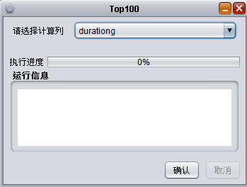或者在表格上选取一列，右键弹出菜单选择Top 100，参考单列基本统计量功能。点击菜单后点击确定进行计算，运行结果如下图：
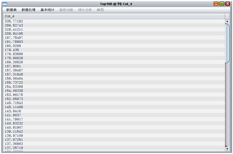bottom100¶
bottom100此操作对于单列数据计算最小的前100值, 执行此统计的方式有两种：界面和函数，详细介绍见下文。
界面¶
点击菜单→基本统计→Bottom 100，显示参数窗体如下图：
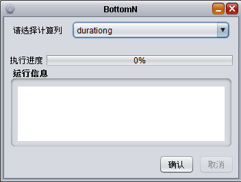或者在表格上选取一列，右键弹出菜单选择Bottom 100, 功能参考单列基本统计量。点击菜单后点击确定进行计算，运行结果如下图：

频率¶
频率此该操作对于单列数据计算频率，执行此统计的方式有两种：界面和函数，详细介绍见下文。
界面¶
点击菜单→基本统计→频率，显示参数窗体如下图：
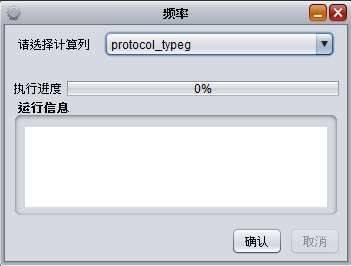或者在表格上选取一列，右键弹出菜单选择频率，参考单列基本统计量。点击菜单后点击确定进行计算，运行结果如下图：
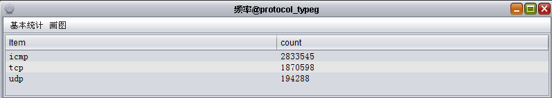注意事项:
- 最多显示10000行.
- 不包括空值
函数¶
def freq(inputTableName, colName, outTableName, srt = None):
- 参数:
- inputTableName 输入表
- colName 列名
- outTableName 输出表名
- srt(可选)summary函数的结果.
示例:
Statistics.freq("bank_marketing", "job", "outTableName")
注意事项:
- 如果已经计算过summary的结果srt, 并且这一列distinct值小于10000，可以直接从srt中取，参考全表统计汇总
- freq = srt.col(‘colname’).getFrequencyOrderByCount() 或者 freq = srt.col(‘colname’).getFrequencyOrderByItem()
- freq是一个list
示例2:
srt = Statistics.summary("bank_marketing")
src = srt.col("age")
freq = src.getFrequencyOrderByCount()
m = freq.size()
for k in range(0, m):
print freq.get(k).getKey()
print freq.get(k).getValue()
百分位¶
该操作对于单列数据计算百分位，执行此统计的方式有两种：界面和函数，详细介绍见下文。
函数¶
def percentile(inputTableName, colName, inputPartitions=None, outputTableName=None):
- 参数:
- inputTableName 输入表
- colName 列名
- outputTableName (可选)输出表名
- inputPartitions (可选)输出表名，默认不输出到表
- 返回：
- Percentile
示例:
pct = Statistics.percentile("bank_marketing", "age")
print pct
print pct.getPercentile(33)
注意事项:
- 如果已经计算过summary的结果srt, 并且这一列distinct值小于10000，可以直接从srt中取，参考全表统计汇总
- percentile = srt.col(‘colname’).getPercentile()
示例2：
srt = Statistics.summary("bank_marketing")
src = srt.col("age")
pct = src.getPercentile()
条件分位数¶
条件分位数提供了比百分位更为灵活的计算方式，该操作对于单列数据计算分位数。执行此统计的方式有两种：界面和函数，详细介绍见下文。
界面¶
点击菜单：统计对比→条件百分位，显示参数窗体如下图：
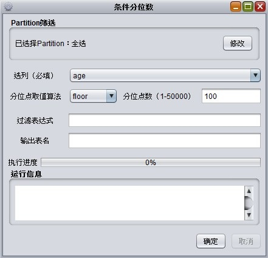点击菜单后点击确定进行计算，运行结果如下图：
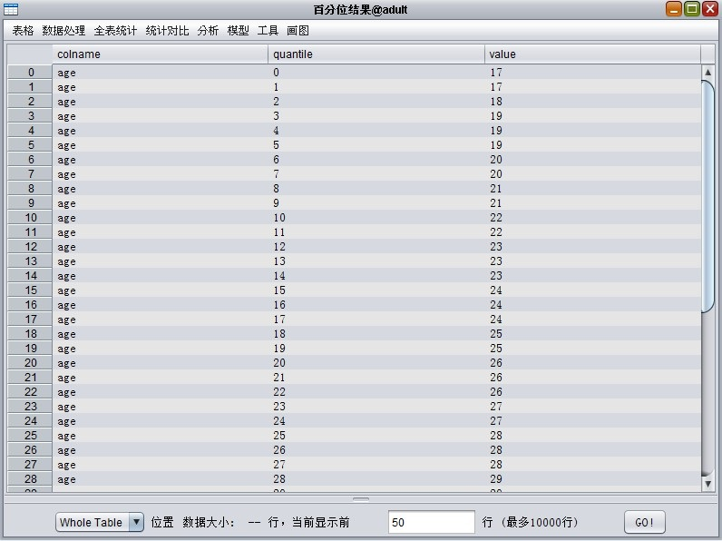其中colname标识计算列名，quantile标识分位点位置，从0开始到最大分位点数，value列标识相应分位点的值
函数¶
def quantile(inputTableName, selectedColName, quantileTableName=None, inputPartitions=None,
expression=None, quantileNum=100, roundMode='floor')
参数:
- inputTableName：输入表名
- selectedColName：计算分位数的列名
- quantileTableName:(可选)输出分位表名
- inputPartitions：(可选)输入表选择分区，默认全选
- expression：(可选)过滤表达式，默认不过滤
- quantileNum：(可选)最大分位点个数，默认为100
- roundMode：(可选)指定计算分位点时的算法，”floor”为上取整、”ceil”为下取整、”round”为四舍五入,默认为floor
示例:
Statistics.quantile("input_table", "col0")
Statistics.quantile("input_table", "col0", quantileTableName="quantile_table", quantileNum=1000, roundMode="ceil")
多列排序和分位¶
sort_rank指令用于多列数据同时进行排序和分位，计算时还有分组功能(类似SQL的Group by)，并能追加ID字段。
输入格式示例：
| ID(string) | data_col1(double) | data_col2(double) | data_col3(double) | Group1(string) |
|---|---|---|---|---|
| 卖家ID例如”张三” | 特征值列1,例如”销售额” | 特征值列2，例如”页面点击率” | 特征值列3，例如”买家打分” | 分类，例如”女装类” |
输出排序表<sort_table>示例，其实就是输入表中3个数据字段改为排名：
| ID(string) | Group1(string) | data_col1(double) | data_col2(double) | data_col3(double) |
|---|---|---|---|---|
| “张三” | “女装类” | 销售额在”女装类”中的排名 | 页面点击率在”女装类”中的排名 | 买家打分在”女装类”中的排名 |
输出分位表<rank_table>示例，各个分组中各个数据字段的分位值(默认为百分位)
| Group1(string) | col_name(string) | Rank(bigint) | Value(double) |
|---|---|---|---|
| “女装类” | “销售额” | 0 | 0%处分位点 |
| “女装类” | “销售额” | 1 | 1%处分位点 |
| (其他分位点) | |||
| “女装类” | “销售额” | 100 | 100%处分位点 |
函数¶
help(Statistics.sortRank)可以查看帮助信息：
def sortRank(inputTableName, rankTableName, quantileTableName,
inputPartitions=None, rankColNames=None, idColNames=None, groupColNames=None,
quantileNum=100, roundMode='floor', ties='order')
- 参数:
- inputTableName：输入表名
- rankTableName：输出排序表名，其格式相当于原始表里面被排序的列里的具体数据都被替换为排名
- quantileTableName: 输出分位表名，其格式为：ID字段，group by字段，以及每个Rank的分位点的数值
- inputPartitions：(可选)输入表选择分区，默认全选
- rankColNames：(可选)在输入表里指定被排序的数据字段的序号，默认选择全部列
- idColNames：(可选)在输入表里指定ID字段的序号，默认为空，最大支持5个id列
- groupColNames：(可选)在输入表里指定分组字段的序号,默认为空,最大支持5个group列
- quantileNum：(可选)最大分位点个数，默认为100
- roundMode：(可选)指定计算分位点时的算法，”floor”为上取整、”ceil”为下取整、”round”为四舍五入,默认为floor
- ties：(可选)指定并列时计算排名的方式，默认为order，排名从1开始，例如对于序列(1, 2, 2, 5)：
- high为取上界(排名为 1, 2, 2, 4)
- low为取下界(排名为 1, 3, 3, 4)
- mean为取均值(排名为 1, 2.5, 2.5, 4)
- dense排名值无间隔(排名为1,2,2,3)
- order为不并列，随机依次排下来(排名为1,2,3,4)
示例:
Statistics.sortRank("input_table","rank_table","quantile_table", rankColNames=['col0','col1'],groupColNames=[‘col3’])
# 读取表input_table进行sort_rank计算；
# 以列col3’作为group列，对于'col0','col1'列进行计算；
# 使用默认的分位点计算方法和ties参数, 默认分位数个数为100；
# 结果存储到rank_table和rank_table中
界面¶
点击 统计对比>多列排序和分位，显示参数界面：
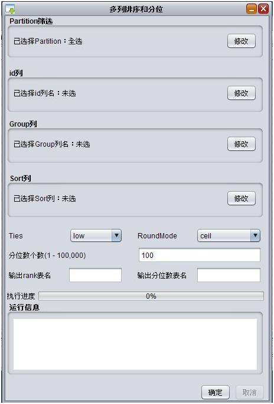界面显示项介绍：
- Partition筛选对应脚本参数inputPartitions
- Id，Group和Sort列分别对应脚本参数idColNames，groupColNames，rankColNames
- Ties选择框对应脚本参数ties
- RoundMode选择框对应脚本参数roundMode
- 分位数个数对应脚本参数quantileNum
- 输出rank表名即为排名表，对应脚本参数rankTableName
- 输出分位数表名对应脚本参数quantileTableName
全表统计汇总¶
该操作对于全表数据进行基统计汇总，包括基本统计量，频率，最大100个值，最小100个值，协方差，相关矩阵，频率，直方图的计算。
函数¶
summary(inputTableName):
返回:
- 返回SummaryResultTable
- 给定SummaryResultTable srt, 通过列名可以取出每一列的统计量等
- src = srt.col(“colName”)
- 包括基本统计量, 统计量参考全表基本统计
- 可以取出最大的100个值
src.topItems
- 可以画出直方图
show(src.getHistogram())
- 如果这一列的不同元素个数小于10000，可以取出每一列的频率和百分位
src. getFrequencyOrderByCount ()
src.getPercentile()
- 给定SummaryResultTable srt, 可以取出协方差和相关矩阵
srt.getCov()
srt.getCorr()
示例1:
srt = Statistics.summary('kddcup')
print srt
print srt.col('flagg').count
连续变量分组统计¶
如果想看一个变量多组过滤条件之间统计结果的对比，可以使用连续变量分组。
界面¶
统计对比->连续变量分组，输入条件列表，输入条件列表对应的输出表列表。如果有输出表列表，那么结果中包含过滤表。
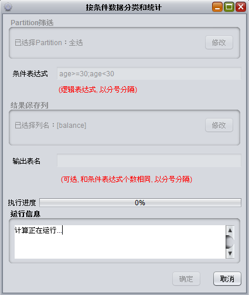以UCI上Bank Marketing数据集为例，将age字段分成小于等于30岁和大于30岁两组，考虑观察每组的balance字段的统计量以及balance字段统计量的对比。运行结果，如下图:
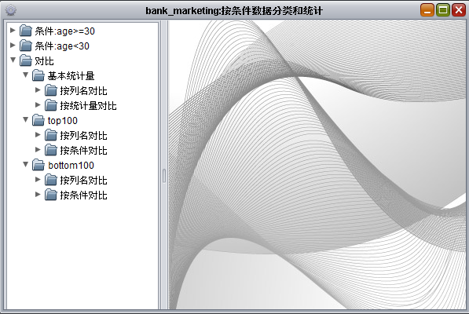这是个树状结构，左侧是条件列表，可以看到每个条件的统计量，以及所有条件直接的对比。 对比分为基本统计量的对比，top100的对比，bottom100的对比。 如果选定基本统计量按列对比的结果，行显示的是两个分类条件，列显示的是基本统计量。
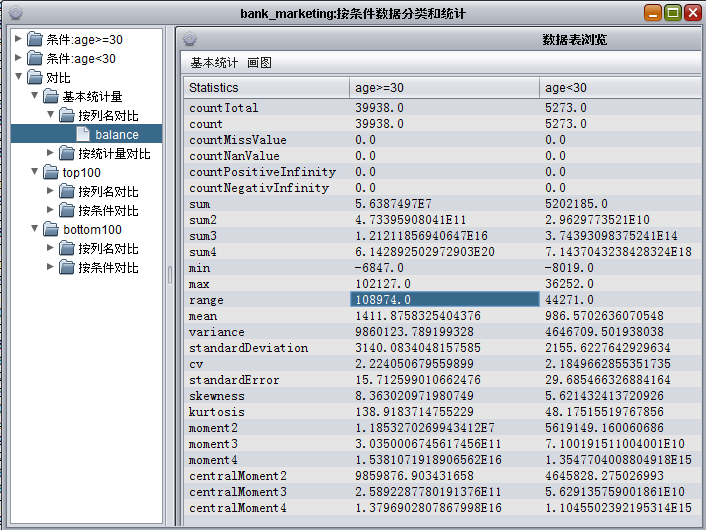如果选定基本统计量->按统计量对比->count, 那么结果显示的是所有分类条件和所有列的count值的对比。
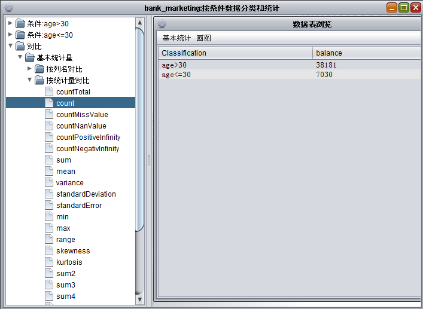- 注意事项:
- 如果想保留每个分组的数据，那么在输出表名中输入和表达式个数相同的表名，相应分组数据会存在相应的表中。
函数¶
def summary(inputTableName, inputPartitions = None, summaryColNames = None, filter = None, by = None):
参数：
- inputTableName: 输入表名.
- inputPartitions:(可选)表的分区列表.
- summaryColNames:(可选)需要计算的列名列表.
- filter:(可选)过滤条件.
- by:(可选)分组条件列表.
返回:
- 如果by=None, 或者by只有一个条件，返回SummaryResultTable.
- 否则返回SummaryResultTable 列表，其中每一个代表在filter条件下，by分组条件对应的summary结果.
示例:
srts = Statistics.summary("bank_marketing", by=["age>30", "age<=30"])
#打印"age>30"的统计汇总
print srts[0]
按partition分类统计¶
如果想看各个分区组之间统计的对比，可以选择按partition分类统计。
界面¶
菜单->统计对比->按partition分类统计，选择partition分组，如下图：
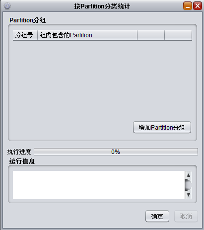点击”增加Partition分组”，如下图：
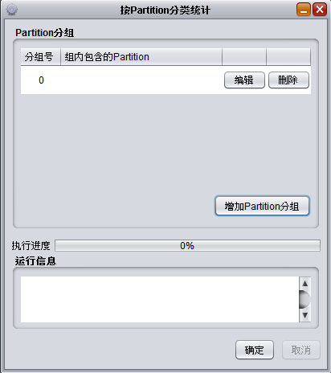在0号分组上点编辑,如下图：
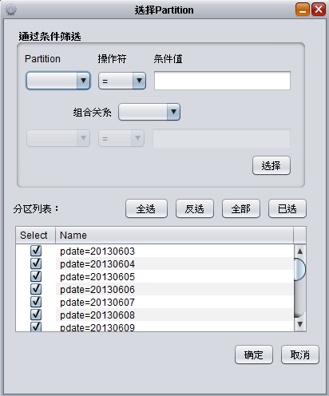可以勾选想要的paritition, 或者输入表达式过滤出想要的partition, 最终以勾选的为准。 例如，如果想选择201306的数据，那么在过滤条件中输入pdate rlike 201306, 点击选择，结果如下图：
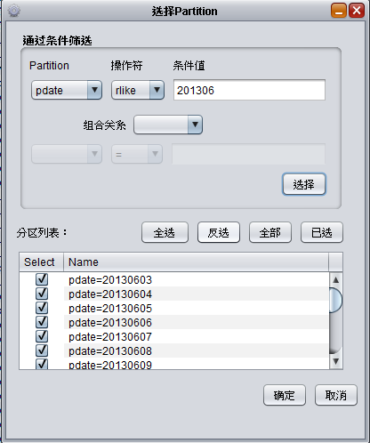点击确定， 如下图：
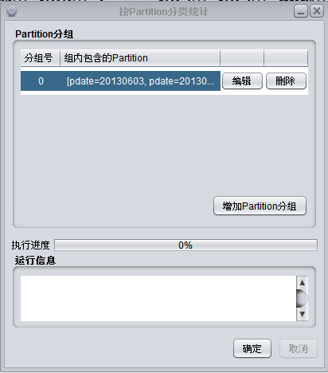这样就选定了第0号partition组，代表2013年六月的数据。以同样的方式选择第1号partition组代表2013年七月的数据，第2号partition组代表2013年八月的数据，第3号partition组代表2013年九月的数据。
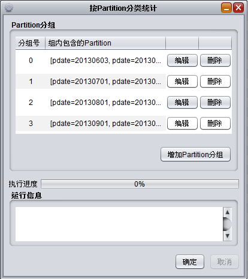点击确定，开始运行，运行结束后，结果如下图：
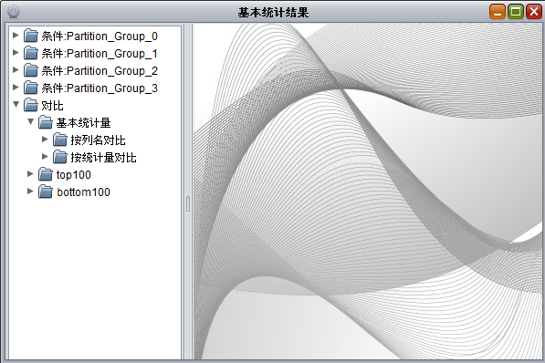Partition_Group_0代表分组号为0的partition组， Partition_Group_1代表分组号为1的partition组，结果解释参照连续变量分组功能。
如果选择对比->按统计量对比，并选择统计量是count, 结果如下图：
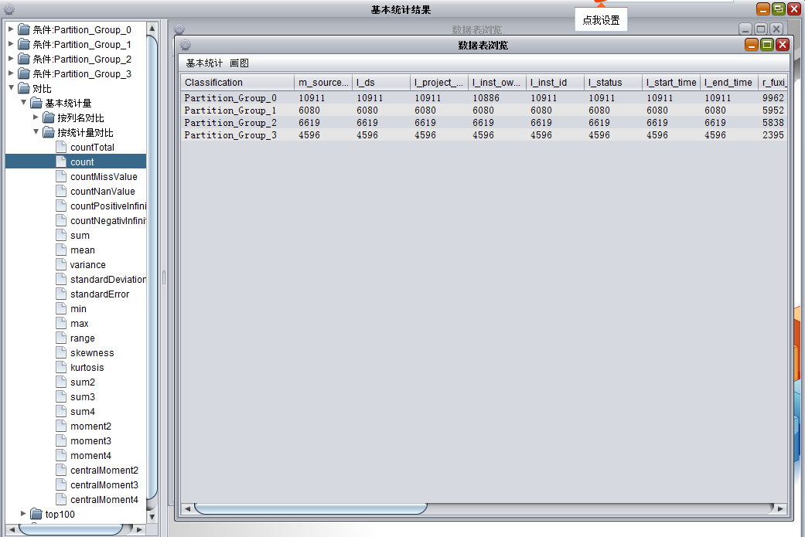可以看出6月次数是10911，7月次数是6080，8月次数是6691，9月次数是4596。
函数¶
def summaryByPartitionGroup(inputTableName, partitionGroups, summaryColNames = None, filter = None):
参数：
- inputTableName: 输入表名.
- partitionGroup: 表的分区列表组.(必须是全路径，不支持表达式)
- summaryColNames: (可选)需要计算的列名列表.
- filter: (可选)过滤条件.
返回:
- srt列表. 其中每一个代表在filter条件下，每个partitionGroup的srt.
示例:
paritionGroup1 = ['ds=20130603']
paritionGroup2 = ['ds=20130606']
[srt1,srt2]= Statistics.summaryByPartitionGroup('tableName', [paritionGroup1, paritionGroup2], ['f1','f2'])
print srt1.col('f2').count
print srt2.col('f1').count
分类变量统计¶
如果想做groupby，并对每组结果进行汇总统计，可以使用分类变量统计。
函数¶
def groupby(inputTableName, outTableName, groupedCols, aggregateCols = None, funcs = None, inputPartitions = None):
参数:
- inputTableName: 输入表名.
- outTableName: 输出表名.
- groupedCols: 分类变量列(group列).
- aggregateCols: 聚合列.
- funcs: 聚合函数(SUM, MIN, MAX, AVG, COUNT, VAR).
- inputPartitions: 输入表的分区列表.
示例:
Statistics.groupby("tableName", "outTableName", ["colName1"])
扩展直方图¶
如果想从一个变量看另外一个变量，可以选择扩展直方图。
界面¶
统计对比->扩展直方图，选定x轴变量，选定y轴变量，点击确定，如下图：
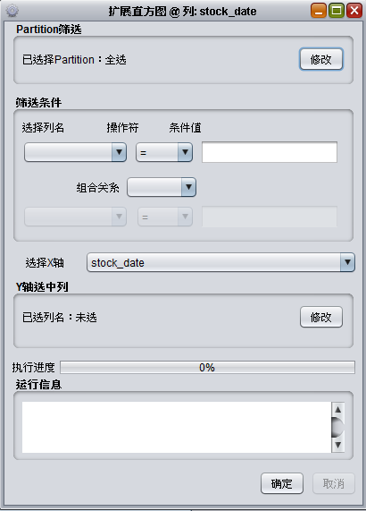运行成功后，显示如下：
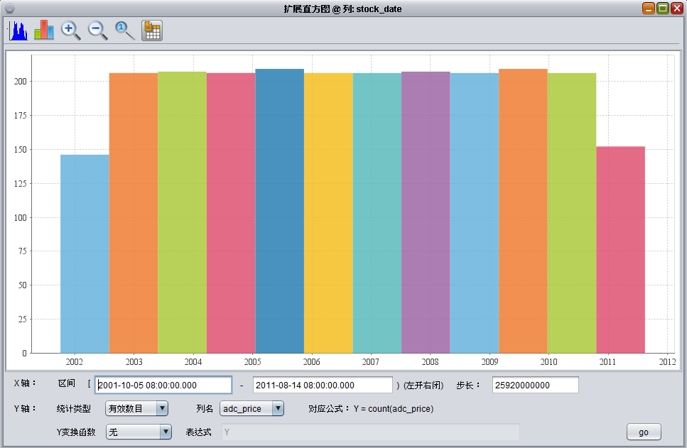窗口上方工具栏同普通直方图一样，可以缩放图片。
窗口下方包括： * X轴：表示显示的x左右的范围，以及步长 * Y轴：可以选择Y轴，并选择以哪种”统计类型”，进行画图。列名包含所有列，统计类型有：{“有效数目”, “缺失值数目”, “和”, “最小值”, “最大值”, “均值”, “方差”, “标准差”, “变异系数”, “标准误差”, “极差”, “偏度”, “峰度”, “二阶距”, “三阶矩”, “四阶矩”, “二阶中心距”, “三阶中心距”, “四阶中心距”}
其中Y轴选择：dst_host_rerror_rateg 统计类型选择: adc_price
显示如下：
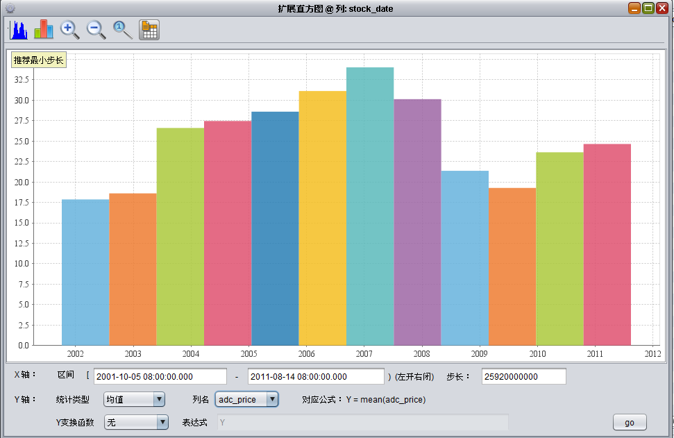可以看出2007年的平均价格较高，2008年价格下降。
选择区间2006-09-09 08:00:00.000到2009-12-22 08:00:00.000，点击”GO”，可以看出趋势在下降，
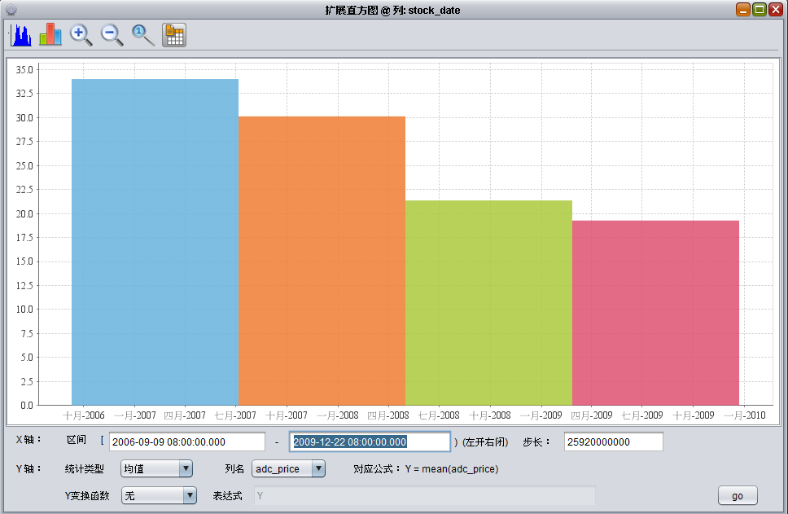点击推荐最小步长，可以看出价格不停地波动。
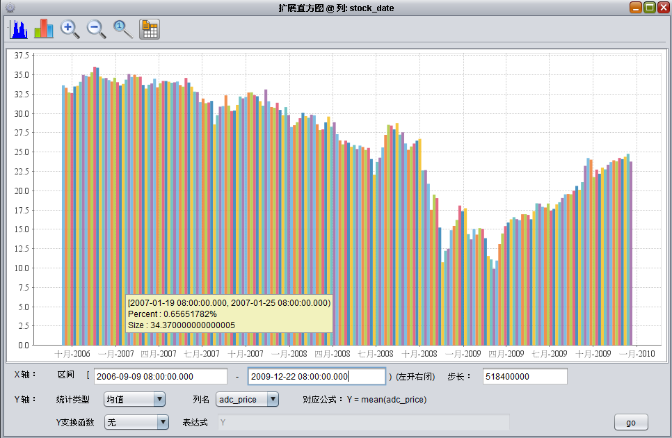交叉表¶
交叉表是一种常用的分类汇总表格，是将某个表中的字段进行分组，一组在交叉表左侧，一组在交叉表上部，并在交叉表行与列交叉处显示源表满足行分组条件和列分组条件的记录条数，最后一行显示满足列分组条件的记录条数，最后一列显示满足行分组条件的记录条数，最后一行最后一列的位置显示原表的记录条数。
界面¶
点击菜单->统计对比->交叉表，输入行表达式列表和列表达式列表，点击确定，运行结束后会弹出交叉表结果。
以UCI上Bank Marketing数据集为例，我们考虑观察用户年龄和婚姻状况的关系。其中age字段代表用户的年龄，marital字段代表用户的婚姻状况。由于年龄是连续的，将年龄分成6个区间 age<20, age>=20 and age<30, age>=30 and age<40, age>=40 and age<50, age>=50 and age<60, age>=60。婚姻状况只有三个状态，因此分成三个条件，marital=’married’, marital=’single’, marital=’divorced’。如下图：
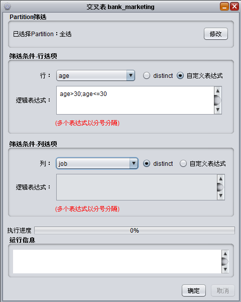运行结果如下图：
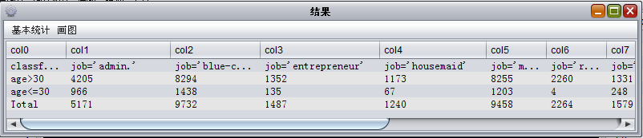函数¶
def crosstabs(tableName, rowExprs, colExprs, partitions=None):
- 参数：
- tableName: 输入表名.
- rowExprs: 行表达式(可以输入列名，代表这一列所有不同的值).
- colExprs: 列表达式(可以输入列名，代表这一列所有不同的值).
- partitions: 输入表的分区列表.
- 返回：
- CrossTabulation
示例1:
tableName = "bank_marketing"
rowExprs = ["age<20", "age>=20 and age<30","age>=30 and age<40"]
colExprs = ["marital='married'", "marital='single'"]
ct = crosstabs(tableName, rowExprs, colExprs)
print ct
示例2:
tableName = "bank_marketing"
rowExprs = ["age<20", "age>=20 and age<30","age>=30 and age<40"]
#如果是列名，那么代表是这个列所有distinct值
colExprs = ["marital"]
ct = crosstabs(tableName, rowExprs, colExprs)
print ct
对比交叉表¶
如果用户使用交叉表，不仅想观察个数，希望观察其他的统计指标，或者想看多列的情况， 可以使用对比交叉表。
界面¶
使用方式: 点击菜单->统计对比->对比交叉表，运行结束后会弹出交叉表状结果和树状结果。
以UCI上Bank Marketing数据集为例，我们考虑观察用户年龄，婚姻状况和的关系。其中age字段代表用户的年龄，marital字段代表用户的婚姻状况。由于年龄是连续的，将年龄分成6个区间 age<20, age>=20 and age<30, age>=30 and age<40, age>=40 and age<50, age>=50 and age<60, age>=60。婚姻状况只有三个状态，因此分成三个条件，marital=’married’, marital=’single’, marital=’divorced’。如下图：
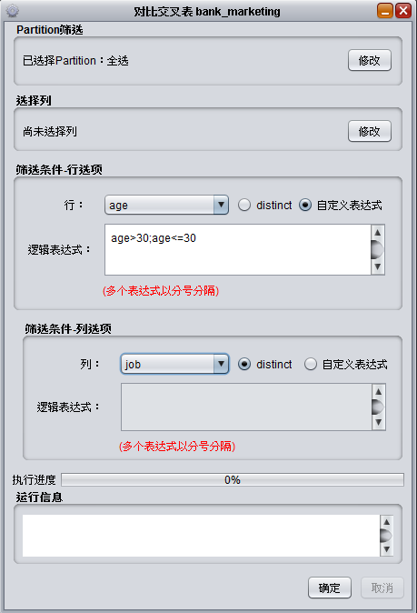运行结果如下:
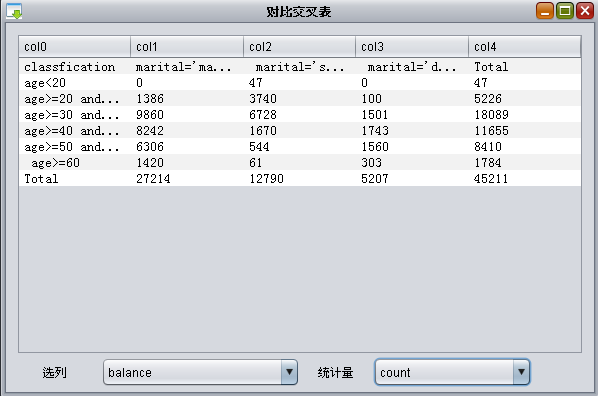可以调整列名和统计量，可以得到不同的交叉表。
排行榜¶
排行榜使用来计算在每个group下的排行榜。
函数¶
def topstat(tableName, groupColNames, aggregateGroupColNames, aggregateStatColName,
aggregateFunction, outputTableName, filter = None, partitions=None, outPartition=None):
参数
- tableName: 输入表名
- groupColNames: 分类变量列(group列)
- aggregateGroupColNames: 聚合的分类变量列(二级group列)
- aggregateStatColName: 聚合的计算列
- aggregateFunction：聚合函数. 包括count, countTotal, min, max, sum, mean, variance. 其中count是有效值个数, countTotal是总个数.
- outputTableName：输出表
- partitions：(可选)输入表的partition
- outPartition: (可选)输出表的partition
示例:
groupColNames = ["job", "marital"]
aggregateGroupColNames = ["age"]
aggregateStatColName = "balance"
aggregateFunction = "sum"
Statistics.topstat("bank_marketing",groupColNames,aggregateGroupColNames, aggregateStatColName,
aggregateFunction, "outTableName")
计算的是bank_marketing这个表在job, marital的每一分类中 sum(balance) group by age的最大100个值
结果存在表中，如下图：
| job | marital | age | sum(balance) | rank |
|---|---|---|---|---|
| admin. | divorced | 57 | 44765.0 | 1 |
| admin. | divorced | 46 | 43555.0 | 2 |
| admin. | divorced | 41 | 39897.0 | 3 |
散布图矩阵¶
该操作用于展示数据表中每两列间的线性关系以及相关系数. 点击菜单：全表统计→散布图矩阵，显示参数配置窗体如下:
散布图矩阵只可选择数值类型的列参与计算，默认选择所有列，可根据需求进行列的删减与重选。运行结果如下:
图中对角线为所选列名，矩阵右上区域为每两列的相关系数，矩阵左下区域为每两列的线性关系展示，可以点击左下区域单元格查看大图：
图中蓝线代表了所选两列的线性关系，红色的点代表样本空间中的数据分布。